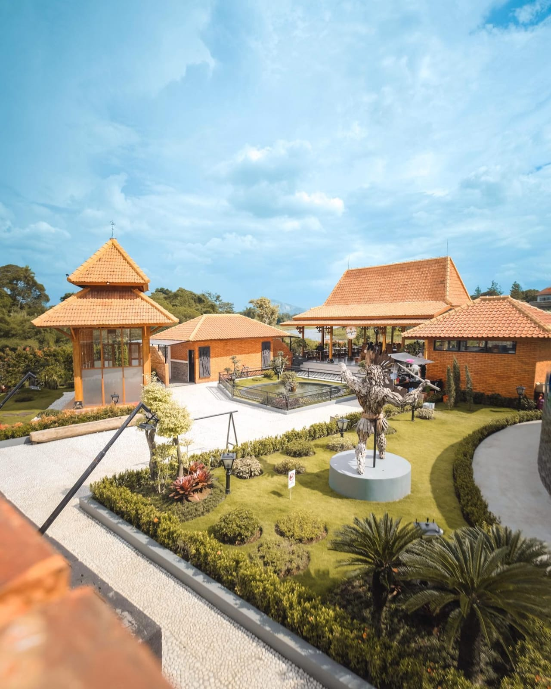
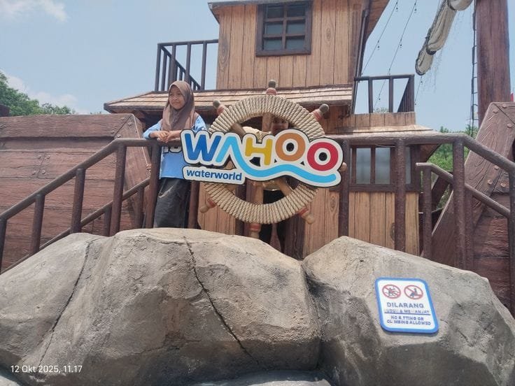
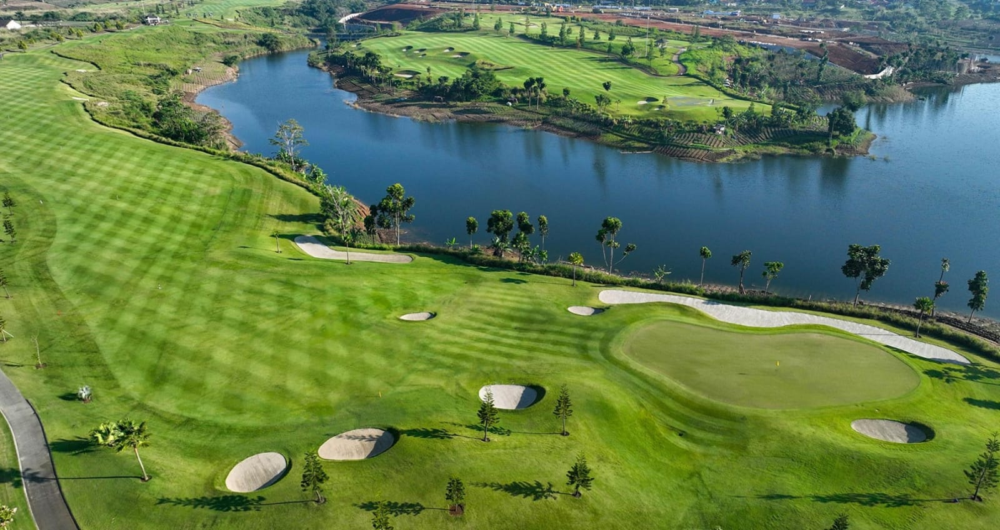

TUR PUSAT KOTA




Rasakan pengalaman liburan luxurious dan penuh adrenalin dalam satu hari di kawasan elit Kota Baru Parahyangan. Mulai dari keseruan wahana air kelas dunia di Wahoo Waterworld, eksplorasi kuliner estetik di Bumi Hejo, hingga menikmati ketenangan budaya di Bale Budaya. Petualangan ini ditutup dengan pemandangan matahari terbenam yang mewah di Parahyangan Golf, menjadikannya paket lengkap buat lo yang pengen refreshing dengan gaya yang berbeda di Bandung Barat!
Rincian Perjalanan
| WAKTU | KEGIATAN | DESKRIPSI |
|---|---|---|
| 08.00 | Penjemputan | Proses penjemputan peserta di titik yang telah ditentukan untuk keberangkatan menuju Kota Baru Parahyangan. |
| 09.00-12.30 | Wahoo Waterworld | Aktivitas rekreasi air di berbagai wahana seluncuran dan kolam ombak. |
| 12.30-14.00 | Bumi Hejo | Perjalanan menuju Bumi Hejo untuk makan siang di area kuliner terbuka dan istirahat sejenak. |
| 14.00-15.30 | Bale Budaya KBP | Eksplorasi galeri seni dan pengenalan kebudayaan Sunda di gedung Bale Budaya KBP. |
| 15.30-17.30 | Parahyangan Golf | Aktivitas sore di area clubhouse atau driving range sambil menikmati pemandangan alam danau dan perbukitan. |
| 17.30-19.00 | Perjalanan Pulang | Mobilisasi kembali menuju pusat kota Bandung atau stasiun untuk pengantaran peserta. |
INFORMASI BOOKING
| Tur | : | Parahyangan |
| Destinasi | : | Wahoo Waterworld, Bumi Hejo, Bale Budaya KBP, Parahyangan Golf |
| Durasi Tur | : | 11 Jam |
| Jam Operasional | : | 08.00-19.00 |
| Fasilitas | : | Tiket Masuk, Air Mineral, Snacks, Parkir, Dokumentasi |
| Harga | : | Rp 450.000 - Rp 750.000 / Pax (tergantung jumlah partisipan) |